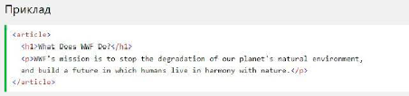

Семантичний елемент чітко описує його значення як для браузера, так і
для розробника.
Приклади не семантичних елементів: <div> і <span>- нічого не говорить
про його вміст.
Приклади семантичних елементів: <form>, <table> і <article>- чітко
визначає його зміст.
Підтримка браузерів
Семантичні елементи HTML5 підтримуються у всіх сучасних браузерах.
Крім того, ви можете "навчити" старих браузерів, як обробляти "невідомі
елементи".
Прочитайте про це в підтримці браузера HTML
HTML5 пропонує нові семантичні елементи для визначення різних частин
веб-сторінки:
- <section>
- <article>
- <header>
- <footer>
Елемент <section> визначає розділ в документі.
Згідно з документацією в3к'с HTML5: "розділ представляє собою
тематичну угруповання контенту, зазвичай з заголовком".
Домашня сторінка зазвичай може бути розділена на розділи для
ознайомлення, змісту і контактної інформації.
Елемент <article> визначає незалежний, автономний вміст.
Стаття повинна мати сенс самостійно, і вона повинна мати можливість
читати його незалежно від іншої частини веб-сайту.
Приклади того, де можна використовувати елемент <article>:
- Повідомлення на форумі
- блозі
- Газетна стаття

Елемент <header> задає заголовок для документа або розділу.
Елемент <header> повинен використовуватися в якості контейнера для
вступного змісту.
В одному документі може бути кілька елементів <header>.
У наступному прикладі визначається заголовок для статті:
Елемент <footer> вказує нижній колонтитул для документа або розділу.
Нижній колонтитул зазвичай містить автора документа, інформацію про
авторське право, посилання на умови використання, контактні дані і т.д
В одному документі може бути кілька елементів <footer>.